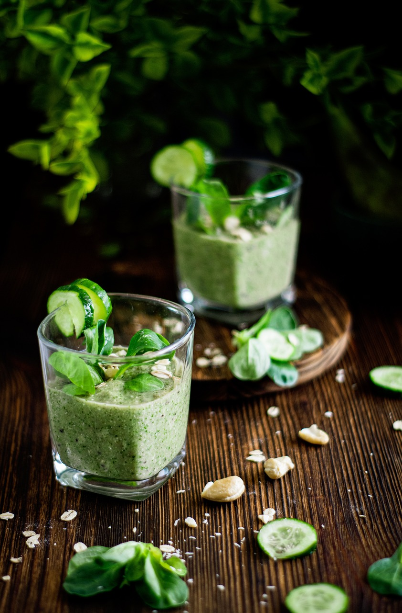

Grüner Smoothie
| 150 g | Feldsalat |
| 2 cm | Ingwer | 2 | Salatgurke |
| 1 | Birne |
| 1 | Banane |
| 1 | Zitrone |
| Agavendicksaft (nach Geschmack) |
Nährwerte für 4 Portionen
| kcal | Eiweiß | Fett | Kohlenhydr. |
|---|---|---|---|
| 200 | 22 g | 6 g | 9 g |
Zubereitung
Den Feldsalat waschen, putzen und gut abtropfen lassen. Den Ingwer schälen und fein hacken. Die Gurke waschen und grob in Stücke schneiden. Die Birne waschen, vierteln und das Kerngehäuse entfernen. Die Banane schälen und in Scheiben schneiden. Den Saft der Zitrone auspressen. Alle vorbereiteten Zutaten zusammen mit dem Agavendicksaft in einem Mixer fein pürieren und nach Bedarf kaltes Wasser hinzufügen, bis die gewünschte Konsistenz erreicht ist. Anschließend in Gläser füllen und servieren.
Rezept erstellt von
Jana